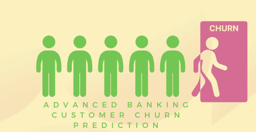

Introduction
In the rapidly evolving landscape of digital banking, where intense competition is the norm, mastering customer retention becomes a critical challenge for financial institutions. It is not merely a measure of success but a vital component of their survival and growth strategies. Recognizing the importance of this issue, a comprehensive analysis was undertaken to explore the underlying factors of customer attrition within the banking sector. The aim is to harness sophisticated machine learning and data analytics to predict the likelihood of customers leaving their bank in the near future. This endeavor goes beyond mere prediction; it seeks to offer actionable insights to aid in developing effective retention strategies.
The project was initiated against the backdrop of significant challenges faced by financial entities in the digital age, with a focus on enhancing customer retention and reducing churn rates. Insights were collated from individuals with direct experience in the banking industry and experts passionate about the analytics of predicting customer churn. This amalgamation of diverse viewpoints has significantly informed the project's strategic direction.
State of the art
In the digital banking sector, the fight against customer churn has been significantly advanced by the integration of sophisticated machine learning technologies. Deep learning, ensemble methods like Random Forests and Gradient Boosting Machines, and clustering techniques such as K-means have become pivotal in uncovering complex customer behavior patterns and segmenting the customer base for tailored retention strategies. These models are complemented by automated feature engineering, which efficiently extracts predictive insights from extensive datasets, and Explainable AI (XAI), which offers a deeper understanding of churn drivers. Real-time analytics further empower banks to act swiftly in mitigating churn risks, facilitating a proactive approach to customer retention.
Moreover, the inclusion of external data sources enriches predictive models with broader contextual insights, enhancing accuracy. As banks navigate the intricacies of digital customer engagement, regulatory and ethical considerations, particularly around data privacy and ethical AI usage, remain at the forefront of strategic planning. This dual focus on cutting-edge analytical techniques and ethical compliance underscores the banking industry's commitment to leveraging technological advancements for improved customer loyalty, setting new standards for personalized banking experiences in an increasingly competitive landscape.
Objective
The primary objective is to establish a robust predictive model capable of identifying customers at the highest risk of churning in the near term. The ambition extends beyond simple predictions to a thorough analysis and interpretation of the data to reveal the key drivers of customer churn. These insights are deemed crucial for empowering banks with the knowledge and strategies to not only retain customers but also to foster deeper loyalty and satisfaction. Ultimately, the project is geared towards enabling banks to proactively engage with their customer base, using predictions and insights to formulate and implement effective retention strategies in the competitive domain of digital banking.
Questions that I intend to investigate by the end of the project:
- 1. What demographic characteristics (age, gender, education level) most significantly influence a customer's decision to leave the bank?
- 2. How does marital status and the number of dependents affect customer loyalty and churn rates?
- 3. Can we predict customer churn based on account information such as months on book and credit limit?
- 4. What impact do behavioral metrics (e.g., months inactive, contact count in the last 12 months) have on predicting customer attrition?
- 5. How does the utilization ratio correlate with customer satisfaction and retention?
- 6. Can association rule mining uncover common pathways or triggers leading to customer churn?
- 7. What are the most significant factors that contribute to a customer becoming inactive or reducing their transaction activity?
- 8. Is there a relationship between the change in transaction count from Q4 to Q1 and the likelihood of customer attrition?
- 9. How does the use of different card categories (Blue, Silver, Gold, Platinum) relate to customer loyalty and attrition rates?
- 10. Can a pattern of transactions (total transaction amount, total transaction count) predict upcoming customer churn?